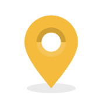

<ion-content has-header="true">
    <div id="wrapper">
        <div id="over-map" ng-show="gameStart">
            <ul class="menu-map">
                <li>
                    <div ng-click="createMyBase()" >
                        
                    </div>
                </li>
                <li>
                    <div ng-click="poseTourette()" >
                        
                    </div>
                </li>
                <li>
                    <div ng-click="attaque()" >
                        
                    </div>
                </li>                
            </ul>
        </div>

        <div id="google-map">
            <map center="map.center" zoom="map.zoom" polylines="map.polylines"></map>
        </div>
    </div>
    <div class="nice-body" ng-show="auth.user && !gameStart">
        <div id="new-game-placeholder" class="logo-placeholder">
          
        </div>
      <ul id="new-game">
        <li><button class="button button-positive" ng-click='demarrerJeux()'>Nouvelle partie</button></li>
        <li><button class="button button-positive">Tableau de bord</button></li>
        <li><button class="button button-positive">Paramètres</button></li>
        <li><button class="button button-positive" ng-click="logout(auth.user.uid)">Logout</button></li>
      </ul>

    </div>
    <div class="nice-body" ng-hide="auth.user">
      <div class="logo-placeholder">
        
      </div>
      <ul id="social-network">
        <li><button id="google-network" class="button button-positive icon-left ion-social-google" ng-click="login('google')">Connexion avec <span class="bold-network"> Google</span></button></li>
        <li><button id="facebook-network" class="button button-positive icon-left ion-social-facebook" ng-click="login('facebook')">Connexion avec <span class="bold-network"> Facebook</span></button></li>
        <li><button id="twitter-network" class="button button-positive icon-left ion-social-twitter" ng-click="login('twitter')">Connexion avec <span class="bold-network">Twitter</span></button></li>

          </ul>
    </div>
    
	<div id="auth-footer">
		
	</div>
</ion-content>